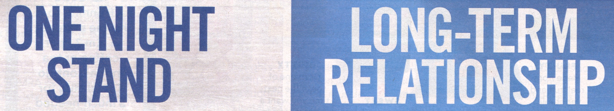
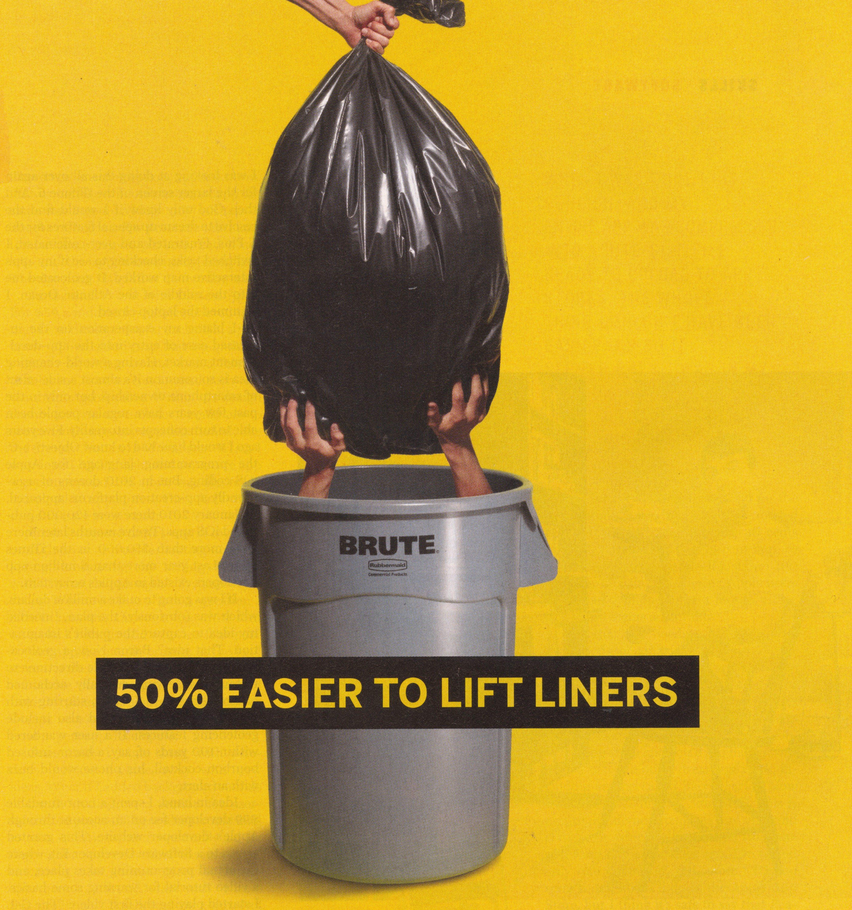
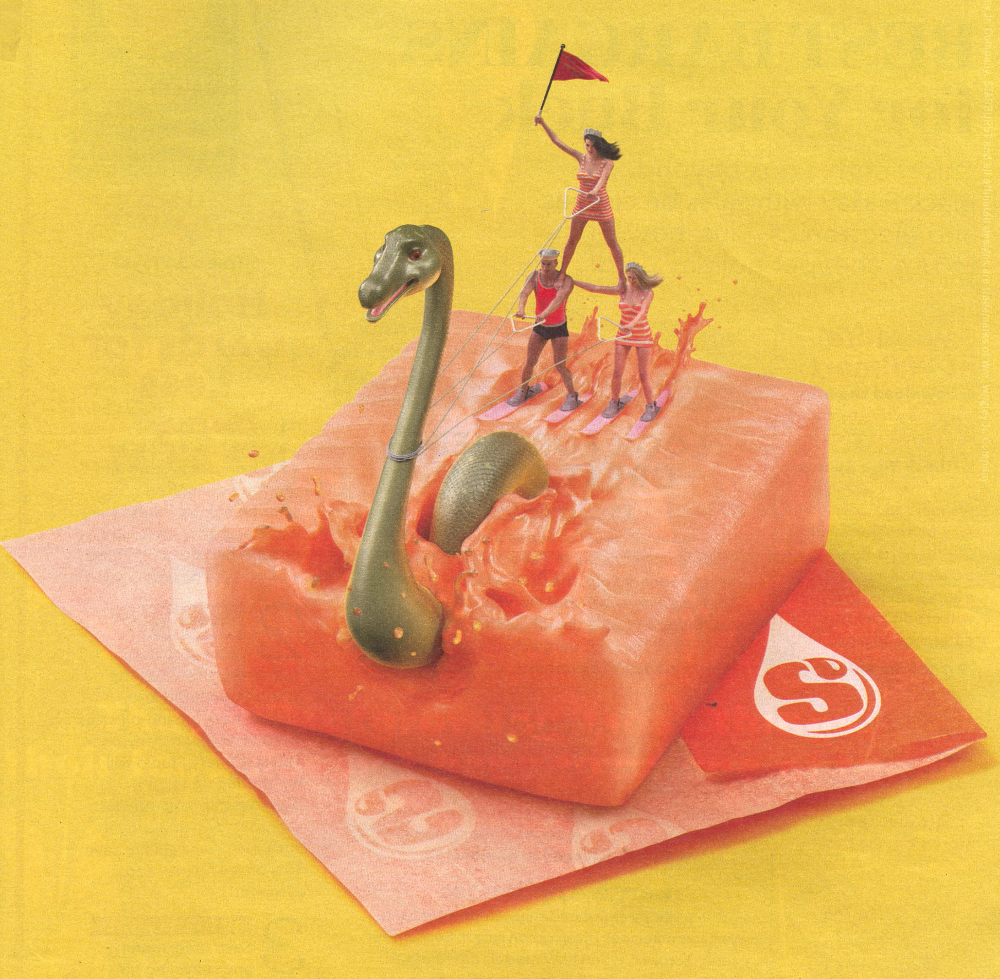
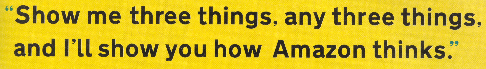
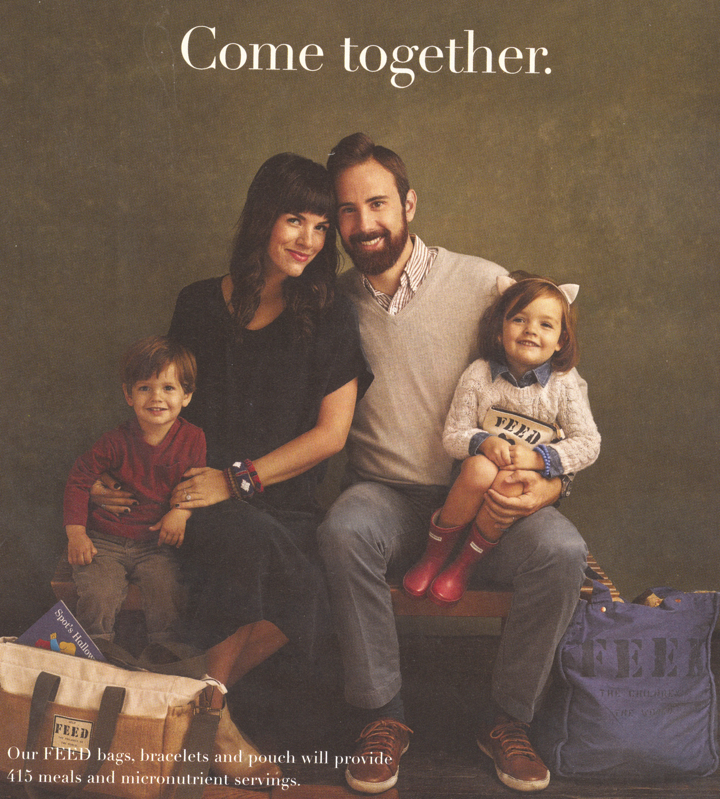
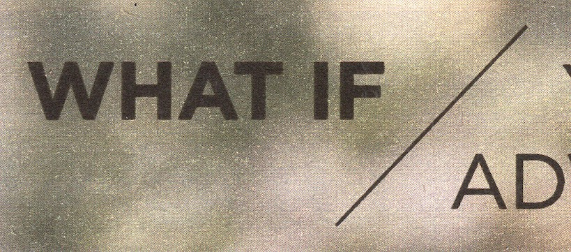
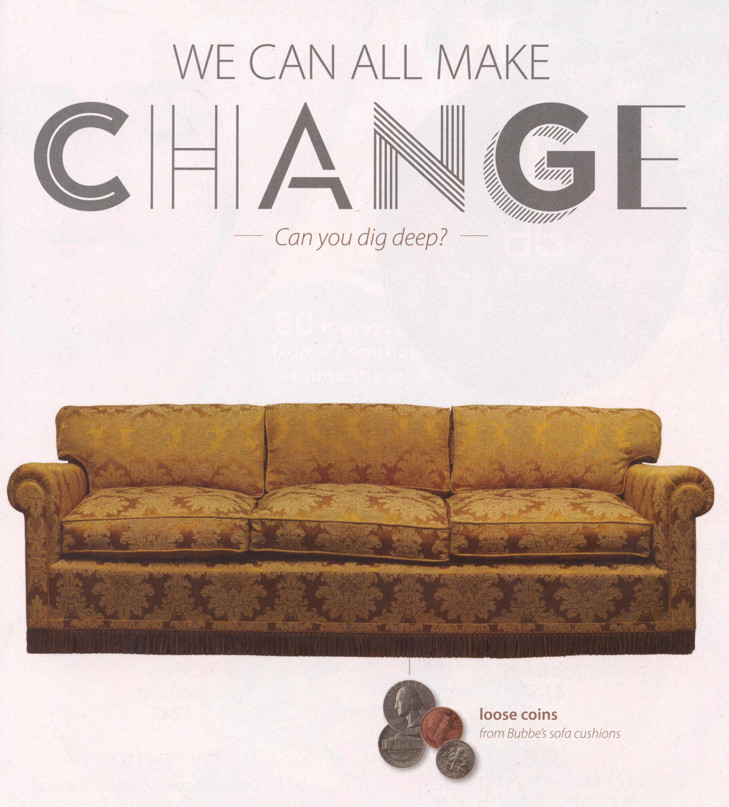
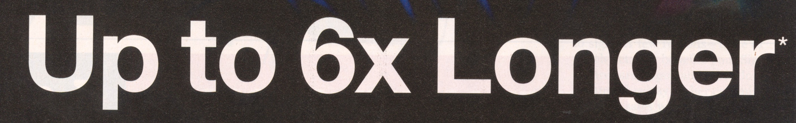
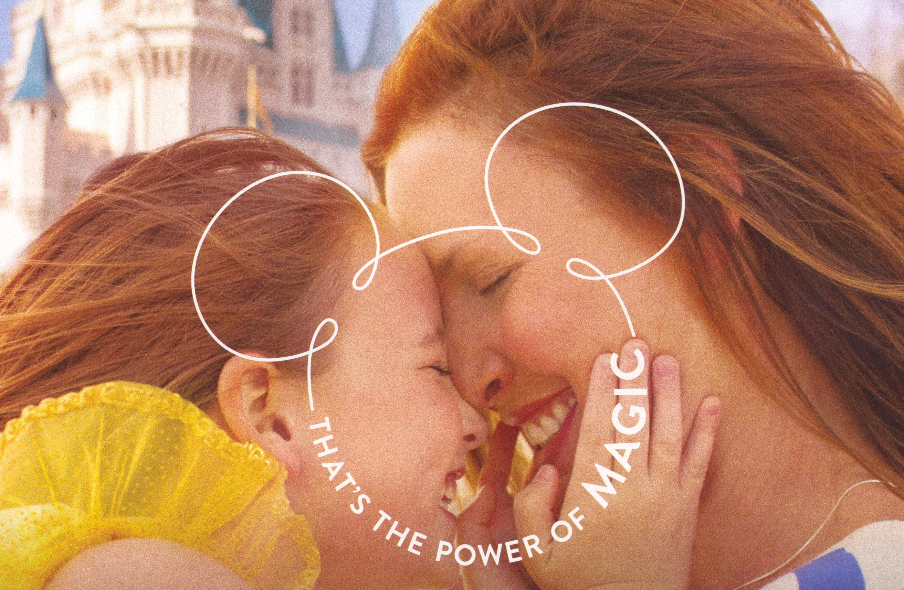
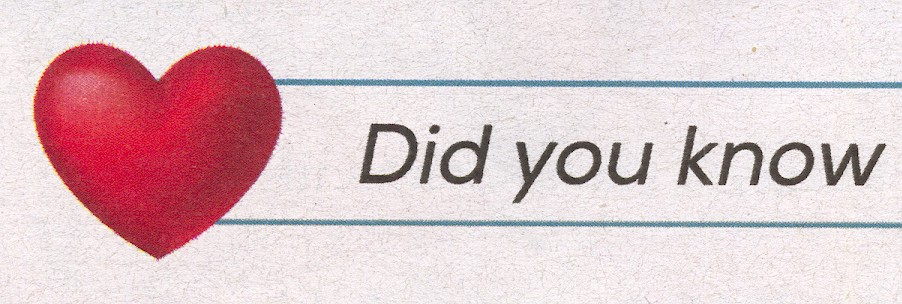

-
Attractiveness - Research has shown that we not only consciously prefer attractive people but we associate their appearance with an inherent ‘goodness’ which then reflects directly on the product (also called the halo effect), but attractive faces instantly produce a positive feeling in the viewer. Attractive individuals produce similar physiological responses in viewers to those observed when people are presented with money.
-
Double Meanings - Words or phrases that can be read in two different ways. Shocking or taboo double meanings can be playfully hinted at. Also can be a source of lewd humour.
-
Visual Puns - Brings metaphorical figures of speech to life. Quick gag but can also communicate the benefit without the need for an explanatory line. Creates clean simple ads that stand out from cluttered ads.
-
Mash-ups - Brings together incompatible images, genres and styles. Creates something new. Combing mismatched images can create strong print advertising. Creates strong visuals and can either be silly or shocking.
-
Foot-in-the-Door - Multiple step influence strategy. First, ask people to comply with a seemingly small request. Then, a short while afterwards, you ask them a bigger request, which is inline with the smaller one. Starting with small request strongly increases the chances of complying with the bigger request compared to only asking the big request. All about changing people’s attitudes.
-
Visual Simile - A visual simile, or visual echo, presents an object to look like something else. Can sometimes be created by clever photography or cropping. Often used for stand alone ads, but it's also possible to create a campaign out of them.
-
Crusades - Aims to change the world on behalf of brands, in either a serious or a frivolous way used in either a serious or a frivolous way. Used in either a playful adoption of tone or a genuine attempt to address a social problem. Some campaigns use the language of crusades while others genuinely attempt to address the issue.
-
Curiosity Arouser - Some ads try and engage our curiosity so much that we cant resist reading body copy, going to a website or looking out for the next one in the series.
-
Challenges - Setting a challenge can be a good way to engage readers and viewers. Writing a headline or endline in the form of a challenge or dare can help an ad cut through.
-
Product Features - Focusing on a single feature of a product can demonstrate its over all quality. These ads might result from a planner or creative unearthing a fact that speaks volumes about a product’s overall quality.
-
Playing With the Logo - Basing an ad around a logo might not seem especially lateral, but it can create simple and clever ads.
-
 Brand Mascots - Have more subliminal power then we realize. Most popular advertising devices of all. A mascot can transcend its timeflot and become a global pop culture icon.
Brand Mascots - Have more subliminal power then we realize. Most popular advertising devices of all. A mascot can transcend its timeflot and become a global pop culture icon. -
Sex - It’s by far the most used and obvious device employed to promote products. Draws attention but towards the sexual imagery itself causing low product recall. Sex seems to work mainly when the product advertised is directly related to an increase in perceived attractiveness or secuality.
-
Advice - Used for warmth and understanding. Can sometimes be offered on more lateral topics to help position a brand.